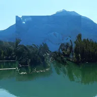

Verplaatsingskaart

Verschuift met de kleuren van de laag de lagen erachter en verbergt zichzelf daarna; of verschuift, met Kaart op Laag eronder, deze laag met de laag eronder.
Instellingen
| Instelling | Type | Bereik | Standaard |
|---|---|---|---|
| Verschuiving | Punt (X, Y) | -5000 px tot 5000 px | 0 px, 0 px |
| X | Keuze | R, G, B, Luminantie | R |
| Y | Keuze | R, G, B, Luminantie | G |
| Randen | Keuze | Herhalen, Spiegelen, Transparant, Tegels | Spiegelen |
| Vanuit midden | Aan of uit | – | Uit |
| Omkeren | Aan of uit | – | Uit |
| Kaart | Keuze | Deze laag, Laag eronder | Deze laag |
| Stijl | Keuze | Klassiek, Standaard | Klassiek |